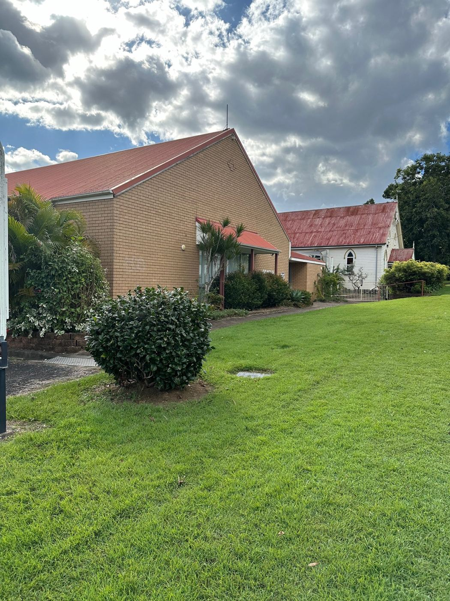

A warm welcome
Our welcome team will meet you at the door, help you find a seat and point you to coffee.
We'd love to meet you.
Whether you're exploring faith for the first time or looking for a deeper walk with Jesus, there's a place for you here. Come as you are.


First time at church, or first time at Freedom? Here's what a Sunday looks like.
Our welcome team will meet you at the door, help you find a seat and point you to coffee.

Spirit-filled worship, biblical teaching and space to encounter God, all in about 75 minutes.

After the service, stick around for a coffee and a chat. It's the best way to get to know people.


Kids & families
Kids are a big part of our church family. During the service, Freedom Kids gives them a safe, fun place to learn about Jesus with leaders who love them.
Aim for about 15 minutes before 9:30 so you can grab a coffee and settle in.
There's plenty of parking at the church and along Pommer Street.
Whatever you're comfortable in. Come as you are, really.
Let us know you're coming and we'll look out for you on the day.

Find us
Look for the brick church and the white timber chapel next door. There's plenty of parking at the church and along Pommer Street.
Something else on your mind? Email office@freedomcco.com or call (07) 2800 8707.
About 75 minutes. We start at 9:30am, and you’re welcome to stay for coffee afterwards.
We worship together, hear a message from the Bible, and finish with space to respond and pray.
Yes! Youth runs on Friday nights from 6:30pm to 8:30pm. On Sundays we also have seating reserved for our teenagers so they can hang out together during the service.
Not at all. Everyone is welcome. Wherever you're at with faith, you're welcome to come, ask questions and explore.
The best first step is to plan a visit and say hi on Sunday. From there, joining a group is a great way to find your people.